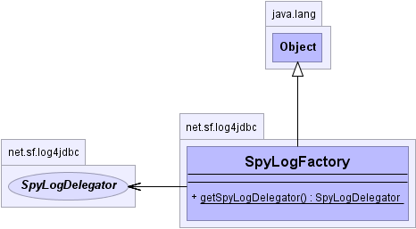

net.sf.log4jdbc
Class SpyLogFactory
java.lang.Object
 net.sf.log4jdbc.SpyLogFactory
net.sf.log4jdbc.SpyLogFactory
public class SpyLogFactory
- extends Object
A provider for a SpyLogDelegator. This allows a single switch point to abstract
away which logging system to use for spying on JDBC calls.
The SLF4J logging facade is used, which is a very good general purpose facade for plugging into
numerous java logging systems, simply and easily.
- Author:
- Arthur Blake
-
- 
| Methods inherited from class java.lang.Object |
clone, equals, finalize, getClass, hashCode, notify, notifyAll, toString, wait, wait, wait |
getSpyLogDelegator
public static SpyLogDelegator getSpyLogDelegator()
- Get the default SpyLogDelegator for logging to the logger.
- Returns:
- the default SpyLogDelegator for logging to the logger.